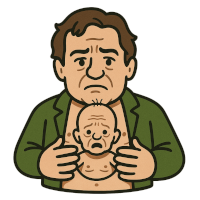
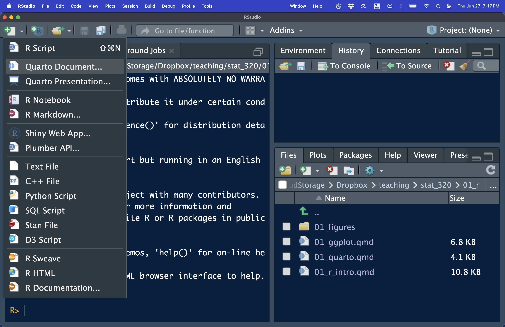
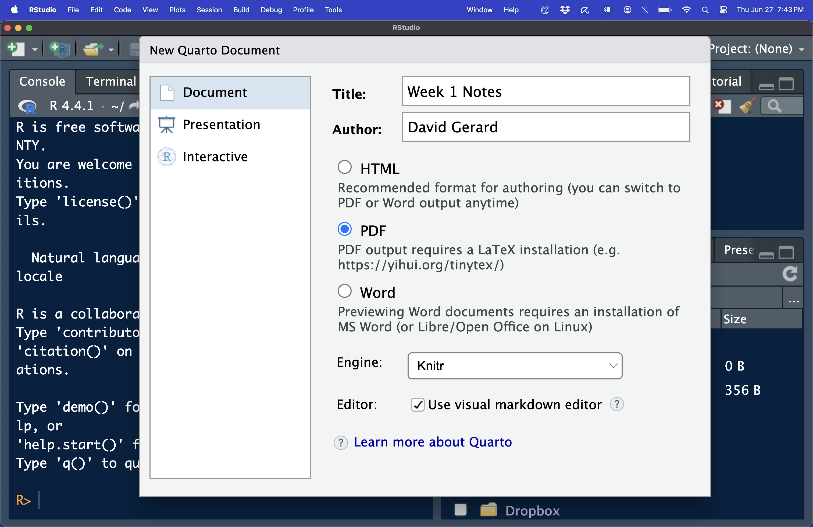

Quarto

is a file format that is a combination of plain text and R code.Lots of great educational material is available at https://quarto.org/
You write code and commentary of code in one file. You may then compile (RStudio calls this “rendering”) the Quarto file to many different kinds of output: pdf (including beamer presentations), html (including various presentation formats), Word, PowerPoint, etc.
Quarto is useful for:
Quarto can also make “literate programming” documents for python, Julia, JavaScript, etc…
Install Quarto via: https://quarto.org/docs/get-started/
To make PDF files, you will need to install \(\LaTeX\) if you don’t have it already. To install it, type in R:
install.packages("tinytex")
tinytex::install_tinytex()If you get an error while trying to install tinytex, try manually installing instead:


You should now have a rudimentary Quarto file.
Save a copy of this file in your “analysis” folder in the “week1” project.
Quarto contains three things
---.```{r} and ```. Only valid R
code should go in here.All of these are are displayed in the default Quarto file. You can compile this file by clicking the “Render” button at the top of the screen or by typing CONTROL + SHIFT + K. Do this now.
Here is Hadley’s brief intro to formatting text in Quarto :
## Text formatting
*italic* **bold** ~~strikeout~~ `code`
superscript^2^ subscript~2~
[underline]{.underline} [small caps]{.smallcaps}
## Headings
# 1st Level Header
## 2nd Level Header
### 3rd Level Header
## Lists
- Bulleted list item 1
- Item 2
- Item 2a
- Item 2b
1. Numbered list item 1
2. Item 2.
The numbers are incremented automatically in the output.
## Links and images
<http://example.com>
[linked phrase](http://example.com)
{fig-alt="accessibility text"}
## Tables
| First Header | Second Header |
|--------------|---------------|
| Content Cell | Content Cell |
| Content Cell | Content Cell |You can insert new code-chunks using CONTROL + ALT + I (or using the “Insert” button at the top of RStudio).
You write all R code in chunks. You can send the current line of R code (the line where the cursor is) using CONTROL + ENTER (or the “Run” button at the top of RStudio).
You can run all of the code in a chunk using CONTROL + ALT + C (or using the “Run” button at the top of RStudio).
You can run all of the code in the next chunk using CONTROL + ALT + N (or using the “Run” button at the top of RStudio).
My typical YAML header will looks like this
---
title: "Week 1 Worksheet: Installing R, Rmarkdown, Rbasics"
author: "David Gerard"
date: today
format: pdf
urlcolor: "blue"
---All of those settings are fairly self-explanatory.
Skip if uninterested.
You can use the \(\LaTeX\) language to write math in Quarto documents.
You put inline math between single dollar signs
$math code here$.
You put display math (equations on a separate line) between two dollar signs
$$
math code here
$$Subscripts are written with an underscore _ with
braces {} surrounding the subscript.
$x_{ik}$Superscripts are written with a caret ^ with braces
{} surrounding the subscript.
$x^{2p}$Big sigma notation is \sum
$\sum_{i=1}^{n}$Square root: \sqrt{}
$\sqrt{x^2 + 1}$log and exponentiation: \log() and
\exp() (note the parentheses, not braces)
$\log(x^2 + 1)$$\exp(x^2 + 1)$Greek letters are typically just their spelling beginning with a
backslash \
$\sigma$$\mu$$\alpha$$\beta$$\pi$$\tau$The tilde, denoting “is distributed as” is \sim
$X \sim N(\mu, \sigma^2)$These are the inequality operations
$<$$\leq$$>$$\geq$You use a vertical pipe | for conditional
statements.
$Pr(X|Y)$Here are some “and” and “or” statements
$\cup$$\cap$Fractions are written with \frac{}{}
$\frac{x^2 + 1}{\sqrt{2}}$Binomial coefficients are \binom{}{}
$\binom{n}{2}$Let’s do a more complicated example:
\[ \frac{1}{\sqrt{2\pi\sigma^2}}\exp(-\frac{1}{2\sigma^2}(x - \mu)^2) \]
$$
\frac{1}{\sqrt{2\pi\sigma^2}}\exp(-\frac{1}{2\sigma^2}(x - \mu)^2)
$$Exercise: Write this equation using \(\LaTeX\)
\[ \binom{n}{k}p^k(1-p)^{n-k} \]
Exercise: Write this equation using \(\LaTeX\)
\[ -\frac{n}{2}\log(2\pi\sigma^2) - \frac{1}{2\sigma^2}\sum_{i=1}^{n}(x_i-\mu)^2 \]